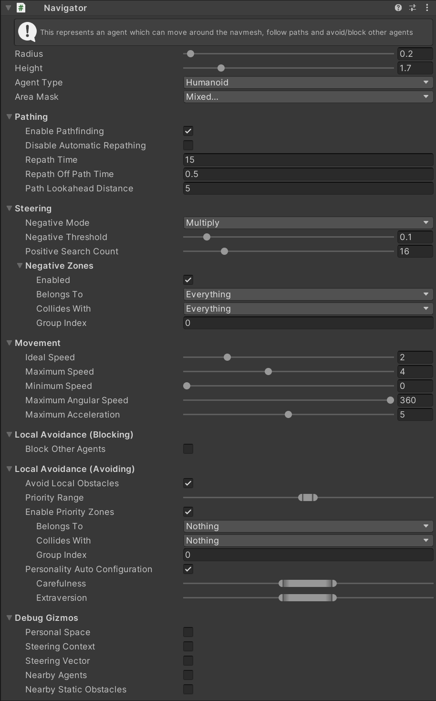

Navigator⚓︎
This MonoBehaviour is the main behaviour which configures a gameObject as an intelligent Agent.
Inspector⚓︎

Note
Some of the following properties set a range instead of a single value, when the agent is first initialised it will choose a random value in this range. This means that if you instantiate many prefabs of the same agent prefab they will all act slightly differently. This gives a more natural look to large groups of agents.
Radius⚓︎
The radius of the agent in the simulation. Other agents will never attempt to walk within this circle.
Height⚓︎
The height of the agent in the simulation. The agent will avoid obstacles (e.g. walls and other agents) which are within it's height span.
Agent Type⚓︎
Agent type used for pathfinding. Available types are configured in the Unity navigation window: Window > AI > Navigation > Agents.
Area Mask⚓︎
The area mask which defines the walkable areas for this agent.
Pathing⚓︎
Enable Pathfinding⚓︎
Allow this entity to find a path to it's goal (if it has a goal).
Disable Automatic Repathing⚓︎
Disable automatically finding a new path when the path becomes stale (e.g. the goal moves).
Repath Time⚓︎
How often (measured in seconds) the path will be automatically recalculated.
Repath Off Path Time⚓︎
If the agent is not on it's calculated path for this many seconds the path will be automatically recalculated.
Path Lookahead Distance⚓︎
How far ahead of the agent should path points be calculated.
Steering⚓︎
Negative Mode⚓︎
These options configure how the negative signal from steering sensors are interpreted when selecting a steering direction. See here for more detail on steering sensors.
- None - negative signals will be completely ignored. This will prevent all steering sensors from affecting this agent.
- Multiply - inverse negative signal will be multiple with steering direction weight, reducing the weight of steering signals by the negative weight. This produces smoother steering and is the best option to use when there are many negative signals affecting an agent.
- Mask Min - only steering directions in the minimum danger area are allowed, all other steering directions will not be chosen. This produces the most "cautious" steering but it is very likely that an agent using this mode will not be able to arrive at a specific destination if there is a danger sensed in that direction. Use this mode when an agent absolutely must not approach dangers and the actual direction it moves is not very important (e.g. wildlife).
- Mask Max - steering directions in the maximum danger area are not allowed, all other steering directions are unaffected by danger sensors. This produces the least "cautious" steering, but it is very likely that the agent will be able to move to it's destination unless the danger is at the same location. Use this mode when there is just one very important danger influencing an agent.
Negative Threshold⚓︎
Configures the threshold used for the negative mode.
- None - threshold does nothing.
- Multiply - threshold does nothing.
- Mask Min - all dangers signals within the threshold of the actual minimum are also treated as the minimum.
- Mask Max - all danger signals within the threshold of the actual maximum are also treated as the maximum.
Positive Search Count⚓︎
Set how many directions will be tested to pick a final movement direction. Less directions makes all steering actions and sensors more efficient, but lowers the fidelity of movement.
Negative Zones⚓︎
Set if this agent is affected by Negative Zones.
The Belongs To, Collides With and Group Index properties configure the collision filter to use for this agent when detecting negative zones.
Movement⚓︎
Ideal Speed⚓︎
The speed which this agent prefers to move at.
Maximum Speed⚓︎
The maximum speed which this agent can move at.
Minimum Speed⚓︎
The minimum speed which this agent can move at.
Maximum Angular Speed⚓︎
The maximum speed (degrees/second) which this agent can turn at.
Maximum Acceleration⚓︎
The maximum acceleration (units/second/second) which this agent can change it's speed with.
Local Avoidance (Blocking)⚓︎
Block Other Agents⚓︎
Whether or not this agent is an obstacle to other agents. If set to false other agents will not try to avoid this agent.
Local Avoidance (Avoiding)⚓︎
Avoid Local Obstacles⚓︎
Whether or not this agent should avoid obstacles (walls and other agents).
Priority (Range)⚓︎
If two agents are walking directly towards each other priority determines how much each agent yields. A difference of 0 means they both avoid the collision at equal amount. A difference of 1 or more means that the higher priority agent does not yield at all. When the agent is created a random value within the range is chosen.
Enable Priority Zones⚓︎
Allow priority zones to affect the priority of this agent.
The Belongs To/Collides With/Group Id properties configure the collision filter to use for this agent when detecting priority zones.
Personality Auto Configuration⚓︎
If this is enabled the "personality" (i.e. configuration for local avoidance) of this agent can automatically be configured from two parameters - carefulness and extraversion. When this is disabled all of the personality parameters can be set manually.
Carefulness (Range)⚓︎
This property is only available if Personality Auto Configuration is disabled.
An agent with a high carefulness will try harder to avoid collisions with other agents in the crowd. This can cause a more erratic movement.
Extraversion (Range)⚓︎
This property is only available if Personality Auto Configuration is disabled.
An agent with high extraversion will try harder to push through the crowd. This can cause more collisions.
Personal Space Radius⚓︎
This property is only available if Personality Auto Configuration is disabled.
The radius which local avoidance will attempt to keep clear of other agents. See Local Avoidance for more details.
Time Horizon (Obstacles)⚓︎
This property is only available if Personality Auto Configuration is disabled.
How far ahead in time (seconds) the agent will attempt to avoid collisions with static obstacles (e.g. walls). See Local Avoidance for more details.
Time Horizon (Agents)⚓︎
This property is only available if Personality Auto Configuration is disabled.
How far ahead in time (seconds) the agent will attempt to avoid collisions with other agents. See Local Avoidance for more details.
Max Neighbour Search Radius⚓︎
This property is only available if Personality Auto Configuration is disabled.
The size of the circle around this agent which will be searched for other agents to avoid. See Local Avoidance for more details.
Max Neighbour Count⚓︎
This property is only available if Personality Auto Configuration is disabled.
The maximum number of agents to avoid simultaneously. See Local Avoidance for more details.
Debug Gizmos⚓︎
Personal Space (Gizmos)⚓︎
If checked, the agent will show it's "personal space" (the circle it tries to avoid letting other agents in to).
Steering Vector⚓︎
If checked, the agent will show it's steering vector (the vector it is trying to steer along).
Nearby Agents⚓︎
If checked, the agent will show all the nearby agents it is trying to avoid.
Nearby Static Obstacles⚓︎
If checked, the agent will show all the nearby static obstacles (walls) it is trying to avoid.
Script Properties⚓︎
GoalPosition⚓︎
Set the goal position for this agent. If pathfinding is enabled a path will be found to this position.
GoalRadius⚓︎
Set the radius of the goal position. The agent will aim to arrive somewhere within the goal radius.
GoalVelocity⚓︎
Set the velocity of the goal position. The agent will aim to match this velocity when it is within the radius.
Script Methods⚓︎
bool Raycast(Vector3 targetPosition, out NavMeshHit hit)⚓︎
This method is equivalent to the Unity NavMesh.Raycast method. It traces a line between two points on the NavMesh, starting at the agent position and ending at the targetPosition. Returns true if the ray terminates before reaching the targetPosition, in this case the hit field contains data about where the ray ended.
bool FindClosestEdge(out NavMeshHit hit)⚓︎
This method is equivalent to the Unity NavMesh.FindClosestEdge method. It finds the closest navmesh edge using the agent position and AreaMask. Returns true is an edge is found.
PathfindingTask FindPath(Vector3 end)⚓︎
Begins finding a path from the agent position to the end position, using the agent AreaMask, AgentType and PathingAreaCost.
The pathfinding runs asynchronously and may take several frames to complete.
PathfindingTask FindPath(Vector3 start, Vector3 end, int areaMask, int agentType, NativeSlice? areaCosts = default)⚓︎
Begins finding a path from the start point to the end point using a custom areaMask, agentType and areaCosts. areaCosts may be null in which case the default costs are used.
The pathfinding runs asynchronously and may take several frames to complete.